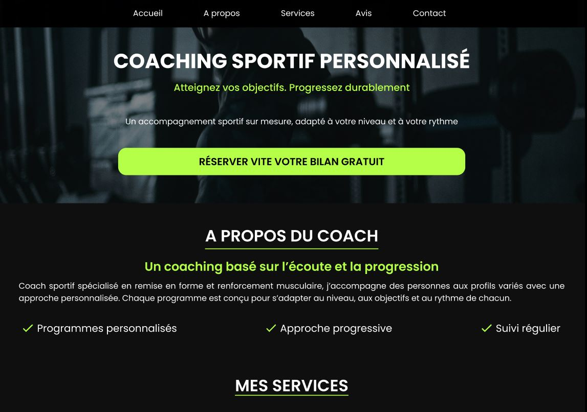
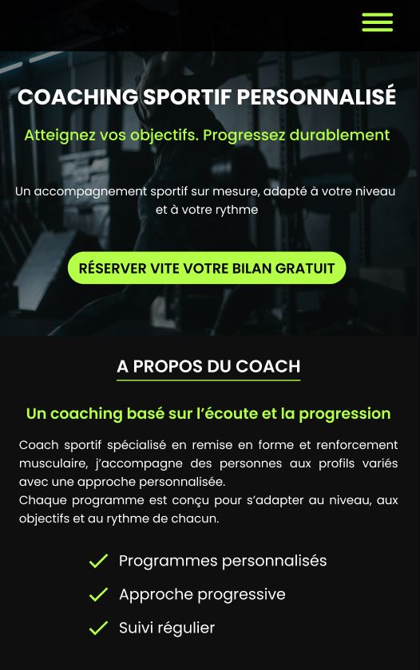
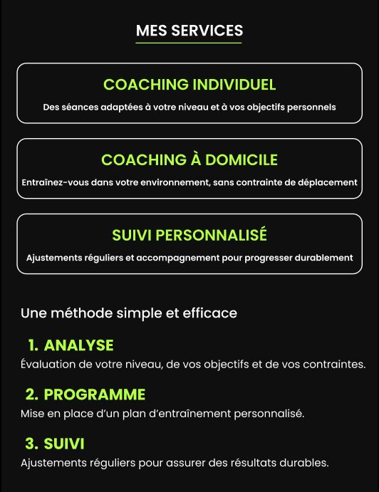

UI/UX DESIGN
Figma
Maquettes haute fidélité, direction artistique, composants réutilisables et préparation du design mobile-first.
Étude de cas · UI/UX · Front-end
Conception et développement d’une landing page one-page pour un coach sportif indépendant. Objectif : inspirer confiance, clarifier l’offre et maximiser la prise de contact.
Travail réalisé : structure UX (mobile-first), UI design premium dark, hiérarchie typographique, composants réutilisables, intégration HTML/CSS/JS et mise en ligne.
Aperçu (captures — mobile & desktop)

Un coach indépendant a besoin d’une présence en ligne claire et crédible pour transformer des visiteurs en demandes de contact, sans complexifier l’expérience (site simple, rapide, pensé pour faciliter la prise de contact).
La page suit un parcours simple et progressif (one-page) : Accueil → À propos → Services → Méthode → Retours → Contact → FAQ.
Identité premium “performance” : dark UI, contraste fort, accent lime, typographie structurée, cartes et composants cohérents.
Un coach indépendant évolue dans un univers sport / performance : il fallait une direction visuelle forte, sans tomber dans un site générique.
Un dark UI à fort contraste avec un accent lime électrique, pensé pour incarner l’énergie et la performance tout en gardant une hiérarchie visuelle claire.
Une landing page premium, claire et pensée pour faciliter la prise de contact, conçue mobile-first et déclinée en desktop. L'intégration front respecte le responsive, la lisibilité et une structure simple pour faciliter l'évolution.


UI/UX DESIGN
Figma
Maquettes haute fidélité, direction artistique, composants réutilisables et préparation du design mobile-first.
HTML, CSS, JavaScript
Visual Studio Code
Structure sémantique et organisation claire des sections.